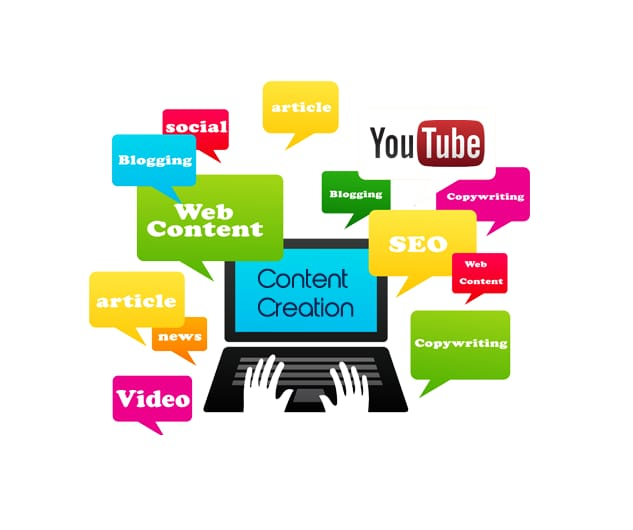

Sosial media adalah sebuah media untuk bersosialisasi satu sama lain dan dilakukan secara online yang memungkinkan manusia untuk saling berinteraksi tanpa dibatasi ruang dan waktu.
Sosial media dapat dikelompokkan menjadi beberapa bagian besar yaitu :
1. Social Networks, media sosial untuk bersosialisasi dan berinteraksi ( Facebook, myspace, hi5, Linked in, bebo, dll)
2. Discuss, media sosial yang memfasilitasi sekelompok orang untuk melakukan obrolan dan diskusi (google talk, yahoo! M, skype, phorum, dll)
3. Share, media sosial yang memfasilitasi kita untuk saling berbagi file, video, music, dll (youtube, slideshare, feedback, flickr, crowdstorm, dll)
4. Publish, (wordpredss, wikipedia, blog, wikia, digg, dll)
5. Social game, media sosial berupa game yang dapat dilakukan atau dimainkan bersama-sama (koongregate, doof, pogo, cafe.com, dll)
6. MMO (kartrider, warcraft, neopets, conan, dll)
7. Virtual worlds (habbo, imvu, starday, dll)
8. Livecast (y! Live, blog tv, justin tv, listream tv, livecastr, dll)
9. Livestream (socializr, froendsfreed, socialthings!, dll)
10. Micro blog (twitter, plurk, pownce, twirxr, plazes, tweetpeek, dll)
Fungsi medsos: